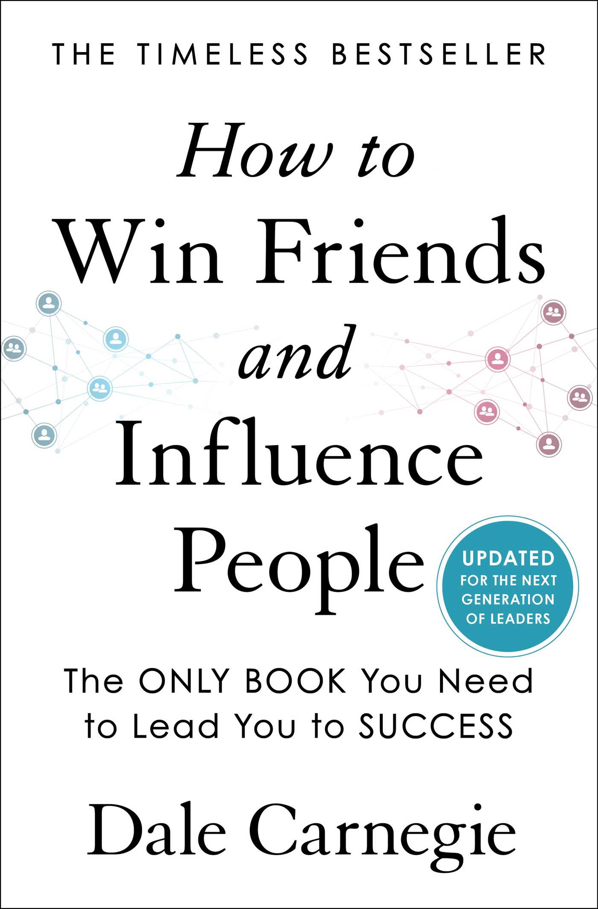

What I am currently reading

A timeless guide on making good first impressions, criticizing
other and not be hated for it, and what to do when nothing else
works

A simple but effective guide to win creative battles in your life
and eleminating the resistance that keeps you from achieving them
A comprehensive history of art from prehistoric times thru to the
1950s. Complete with pictures to follow along
This novel is about a young Andalusian sherperd boy and his
alegorical journey to the pyramids in Egypt